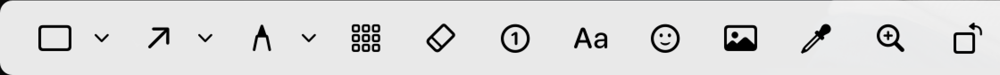
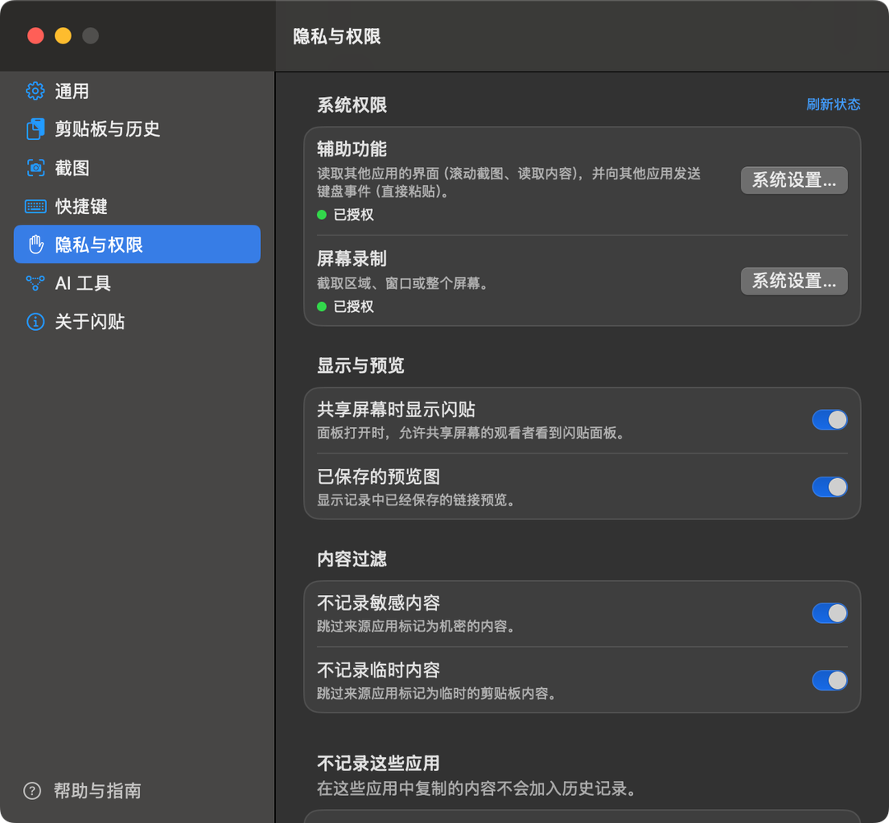

把剪贴板交给 AI 当上下文
blinkclip-mcp 是标准 stdio JSON-RPC 服务，Claude、Codex、Cursor 都能接；「设置 → AI 工具」可复制配置。
截图与标注


剪贴板历史

AI 与同步
blinkclip-mcp 是标准 stdio JSON-RPC 服务，Claude、Codex、Cursor 都能接；「设置 → AI 工具」可复制配置。
开启后经 CloudKit 在 Mac 之间同步历史与分组；快捷键、权限与保留期限不同步。
快捷键
默认值如下，全部可以在「设置 → 快捷键」里改。
权限与隐私
闪贴需要系统级能力才能读界面、投按键和截图；不授予也能用，滚动截图可改用手动滚动。

上手前
辅助功能用于读界面和发送按键（直接粘贴、滚动截图），屏幕录制用于截图；发送事件随辅助功能一并生效。都在「系统设置 → 隐私与安全性」授权，应用内「设置 → 隐私与权限」有直达按钮；不授予也能用。
默认不会。历史、截图和设置只存在本机；同步默认关闭，开启后内容进入你自己 Apple ID 下的 iCloud，不经过本项目的服务器。
支持。同一个 Universal DMG 同时支持 Intel 与 Apple 芯片，系统要求 macOS 14 或更新。
「关于闪贴 → 检查更新」在应用内下载 Universal DMG 并校验签名后安装，更新后系统可能要求重新授予辅助功能。卸载时把 BlinkClip.app 移到废纸篓，再删除 ~/Library/Application Support/BlinkClip/ 即可。
拖进「应用程序」就能用。免费、开源、无需账号。
Universal 通用安装包 · Developer ID 签名并通过 Apple 公证 · AGPL-3.0v1.0.33 · macOS 14+ · Intel / Apple 芯片